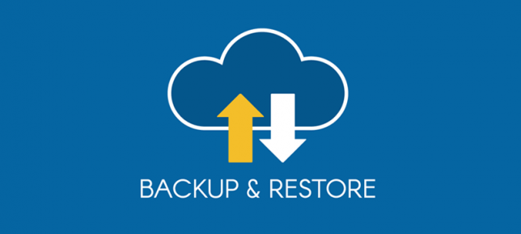

Backup as a Service - O que é backup como serviço, como escolher e porque você deveria começar a pensar nessa estratégia para sua empresa.
Blog Blogtober Cloud Veeam Veeam VanguardCompartilhe esse post nas redes sociais...
Olá Homelabers,
Será que faz sentido (ou não) utilizar a nuvem como uma solução de proteção de dados?
Nesse artigo vou abordar o tema: BaaS - Backup as a Service ou Backup como Serviço de um ponto de vista de arquitetura de sistemas e descrever:
* O que é Backup as a Service (BaaS)
* Quais são as principais vantagens e desvantagens de se adotar BaaS
* O que procurar em um fornecedor de BaaS
* Quais as ofertas de BaaS
Vale lembrar que nesse artigo, não irei falar sobre nenhum vendor ou solução do mercado, quero te dar insumos baseados na minha experiência e nas minhas pesquisas para te ajudar a pensar na hora de escolher a sua solução.
Mudança de Paradigma
Antes de tudo, eu diria que a ideia de ter um fornecedor externo executando e sendo responsável pelo backup da sua infraestrutura local e seus dados, pode ser uma grande mudança de paradigma para muitas organizações.
Sabemos que backup é um serviço que muitas vezes é negligenciado pelas empresas, que só lembram que precisam de uma solução de backup confiável, quando enfrentam problemas relacionados a perda de dados, seja por um virus ou ransomware que destrói todos os dados, um HD queimado, um notebook roubado ou uma mudança não planejada que replica os dados de homologação para produção ou ainda erro humano como aquele usuário que apagou sem querer a planilha de clientes.
Manter e operar uma estrutura de backup - seja ela on-prem ou na nuvem - demanda recursos e custos que muitas vezes não podem ser medidos e principalmente não entregam valor para o negócio da empresa. Novamente, o backup só é lembrado quando existe um incidente.

O que é Backup as a Service?
BaaS é uma alternativa ao backup tradicional, aquele que você tem - ou deveria ter - dentro da sua empresa. O BaaS é perfeito para negócios e organizações que se encontram no limite para fazer backups localmente, seja por falta de capacidade física ou equipe qualificada. Também é ideal para empresas que não querem investir em uma infraestrutura de TI somente para gerenciamento de backup de dados.
Vantagens do BaaS
A principal vantagem do BaaS é a facilidade que o serviço trás. A responsabilidade de todas as tarefas relacionadas ao serviço de backup é do fornecedor.
O fornecedor do BaaS cuida de tudo. O contrato do BaaS geralmente é dado por uma tarifa fixa mensal. Isso permite que startups e empresas de pequeno porte possam pagar por serviços complexos sem precisar comprar servidores, storage ou mesmo ter mão de obra específica dentro de casa.
* **Conveniência** - A conveniência oferecida pelas soluções BaaS é indiscutível. O BaaS é automatizado - uma vez configurada, as informações são salvas automaticamente à medida que são transmitidas. Você não precisa salvar, rotular e rastrear informações de forma proativa. Em vez disso, a conveniência do BaaS permite que você se concentre no seu trabalho sem se preocupar com a perda de dados.
* **Segurança** - Como seus dados são armazenados no BaaS, você não está sujeito às ameaças típicas de hackers, desastres naturais e erros do usuário. De fato, os dados armazenados no BaaS são criptografados, o que minimiza os riscos em que esses dados podem incorrer.
* **Facilidade de recuperação** - Devido a vários níveis de redundância, se os dados forem perdidos ou excluídos (mais frequentemente por erro ou exclusão de usuário individual), os backups estarão disponíveis e facilmente localizados. Vários níveis de redundância significa que o BaaS armazena várias cópias dos seus dados em locais independentes um do outro. Quanto mais níveis você tiver armazenado, melhor, porque cada nível garante que seus dados sejam protegidos contra perdas o máximo possível, permitindo que você acesse uma versão de backup dos seus dados, caso eles se percam.
* **Acessibilidade** - O BaaS pode ser mais barato que o custo de unidades de fita, servidores ou outros elementos de hardware e software necessários para executar o backup; a mídia na qual os backups estão armazenados; o transporte de mídia para um local remoto para guarda; e o trabalho de TI necessário para gerenciar e solucionar problemas de sistemas de backup.
A perspectiva do Cliente
Vou começar analisando as coisas da perspectiva do cliente. Como cliente que compra qualquer serviço de proteção de dados, vocês precisa analisar e saber pelo menos os seguintes pontos:
* **Escopo** - _Qual é o escopo da oferta de serviço?_ Nesse caso, o que posso fazer backup e quais são os níveis de granularidade de RTO e RPO? Isso incluirá plataformas e aplicativos suportados. Eu também acrescentaria aqui que o escopo deve incluir se um serviço deve ser estendido para oferecer alguma forma de recuperação de desastre.
* **Custos e licenciamento** - _Como serei cobrado?_ O custo do serviço é baseado (por exemplo) em terabyte sob proteção, número de objetos protegidos (VMs, bancos de dados) ou alguma outra métrica? Quais custos extras existem, como uma cobrança por restauração ou tráfego de rede?
* **Transferibilidade** - _Será possível transferir meus dados de uma plataforma para outra?_ Observe que esse contexto pode se referir à mudança para outra plataforma física (nuvem para nuvem ou nuvem para local) ou para outro provedor.
* **Segurança** - _Como meus dados serão protegidos na sua plataforma?_ A criptografia na fonte oferece melhor segurança ao proprietário dos dados, mas pode distorcer a capacidade protegida em uma plataforma se o carregamento for baseado em terabytes físicos armazenados. Além disso, considere que a criptografia fornecida pelo fornecedor pode dificultar a movimentação de dados para fora desse provedor de serviços.
* **Relatórios e níveis de serviço** - _Que acordos de nível de serviço (SLA) o fornecedor oferece?_ Como o fornecedor informa sobre os sucessos / falhas do backup? Como posso saber se um fornecedor não está em conformidade? Quais são os meus procedimentos de suporte? Quais são as penalidades se os objetivos do serviço não forem cumpridos?
Quais as ofertas disponíveis hoje no mercado?
Quais opções estão disponíveis nos prestadores de serviços? A solução mais óbvia para fornecer backup como serviço é um serviço em nuvem. Isso pode ser implementado como uma solução nativa da nuvem ou simplesmente executando instâncias virtuais na nuvem pública. O aspecto interessante da entrega como serviço é que, como cliente, o método de escolha realmente não importa. Obviamente, importa se o modo como o serviço é entregue afeta os requisitos do cliente. Se o provedor de serviços não puder fornecer o serviço com eficiência, isso poderá ter um impacto direto na escolha. Por outro lado, se o provedor de serviços não puder fornecer desempenho adequado de backup / restauração no local, isso poderá anular quaisquer benefícios de economia de custos. Existem várias ofertas de fornecedores no mercado que oferecem Backup como serviço de diferentes maneiras:
* **Nativo da nuvem** - isso pode incluir a execução do serviço de backup usando serviços de plataforma em nuvem nativos, como bancos de dados, armazenamento de objetos e instâncias virtuais. O nativo da nuvem também pode incluir "na nuvem pública para a nuvem pública", sem suporte para local.
* **Instâncias Virtuais** - os fornecedores simplesmente criam instâncias virtuais na nuvem pública e usam o armazenamento de objetos locais como destino de backup. Alguns modelos desse tipo de serviço usarão a conta em nuvem do cliente, outros usarão uma conta de fornecedor.
* **Nuvem pública "privada**" - é um modelo em que o provedor de serviços executa um datacenter privado (às vezes baseado em nuvem pública) e o disponibiliza como destino de backup. O cliente executa o software de backup local que gerencia a transferência de dados.
* **Híbrido** - alguns fornecedores começaram a estender o backup local à nuvem pública (e teoricamente vice-versa). Idealmente, essas soluções devem permitir restaurações entre plataformas.
O Backup como serviço pode realmente substituir a equipe de backup?
Não vejo isso acontecendo, mas qualquer oferta de serviço de backup precisa ser totalmente automatizada e capaz de ser incorporada a uma esteira de trabalho, oferecendo APIs ao cliente onde ele possa “codificar o backup” na sua estratégia de infraestrutura como código (IaC). Um exemplo disso seria ao executar um código para criar uma nova VM, automaticamente adicionar essa VM no job de backup.
Conclusão
O backup como serviço pode ser executado em várias plataformas, mas, na minha opinião, funcionaria melhor se entregue apenas como uma solução de software e não com uma solução de hardware (appliances) ou mista.
Na nuvem pública, eu esperaria que a proteção de dados fosse entregue como um serviço, nativo da nuvem ou não. As especificidades da implementação determinarão quão bem (e eficientemente) o serviço pode ser entregue.
Mas atenção: Escolher uma solução de backup é como se casar. Você precisa escolher seu parceiro com cuidado, pois você estará com ele por muitos anos - goste ou não!
E você acredita que o backup como serviço é hoje uma solução viável para sua empresa? Deixe sua opinião nos comentários
Compartilhe esse post nas redes sociais...Valdecir Carvalho
Nerd e pai orgulhoso da Mariana e João. Profissional Sênior de TI com foco em arquitetura de infraestrutura e cloud computing. Blogueiro, podcaster, palestrante, amante de comunidades técnicas, fotógrafo aposentado e adora jogos antigos.
#vExpert · #VMUGLeader · #VUGBrasil · #vBronwBagBrasil · #VeeamVanguard